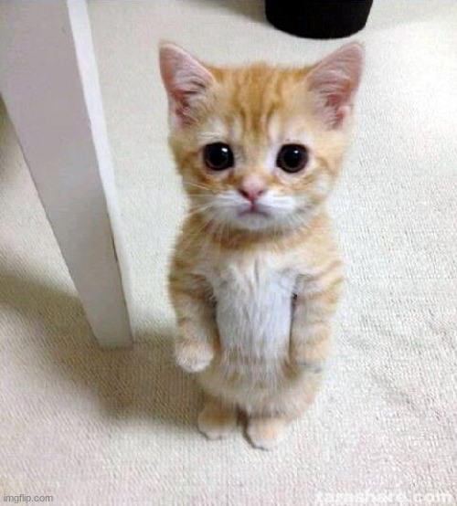

Nagtataka ka siguro kung para san to
well, di ko rin alam hahaha pero diba nga
nakwento ko sayo na nag a-upskill ako
and currently nag te-take ako ng course about
web development. So naisip ko, why not gawa ko ng mini
project para sa taong espesyal sakin eyyy
This is my very first project so pagpasensyahan mo na
wala pa masyadong design and what not hahaha konti palang kasi alam ko
pero okay lang yan, iba nga nasunugan eh
Wait, di ko tlga alam mga ilalagay ko dito pero kung nakikita mo lang
ngiti ko habang muntangang gumagawa ng codes neto
hahahh ewan ko ba, I like doing things if it's for you.
anyway, this webpage is basically an invitation for another church date with you.
sa tanging rason na gusto lang kitang makita uli hehe :)
And sana G ka :((
